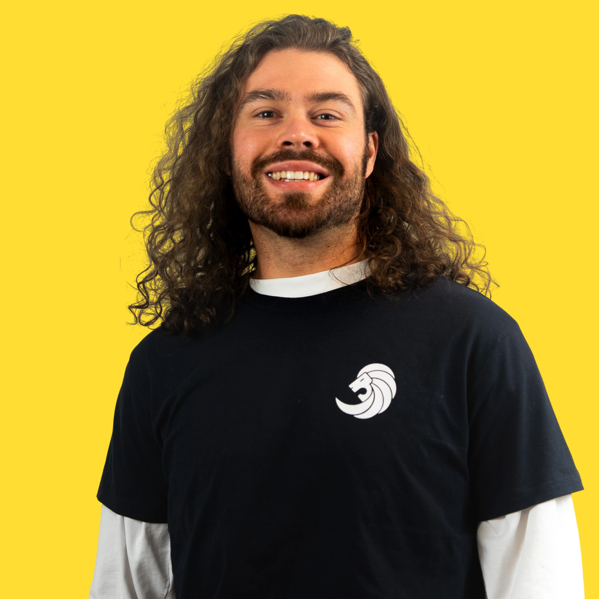

Dec 2025 — Present
Cooling System Engineer
Lund Formula Student · Powertrain
Accumulator thermal modelling and cooling-system development for the LFS27 electric Formula Student car, following the LFS26 swirl-pot proof of concept.
Automotive engineer — simulation, analysis & performance

Automotive engineer specialising in motorsport development, simulation & analysis — thermal modelling, combustion engines and hybrid power units, backed by hands-on dyno testing and models validated against experimental data.
MSc Sustainable Energy Engineering at Lund University
Cooling System Engineer at Lund Formula Student
Lund Formula Student · Powertrain
Accumulator thermal modelling and cooling-system development for the LFS27 electric Formula Student car, following the LFS26 swirl-pot proof of concept.
Project LoCaGas · LTH
Experimental dual-fuel combustion research on a converted Scania D13: campaign planning, dynamometer measurements and post-processing.
Retroneering
Building a reverse-engineering practice for discontinued classic and race-car parts, spanning measurement, CAD, GD&T and validation.
R-Quatre · Classic Renault parts
Designed replacement parts and specialist tools from initial reconstruction through manufacturer liaison and production.
Westport Fuel Systems · BEng thesis
Compared structure-borne knock detection with in-cylinder pressure measurements on a heavy-duty dual-fuel engine.
Lightyear · Helmond
Defined and programmed an accelerated, robot-driven cable-durability test and investigated damage mechanisms in development hardware.
Case studies across motorsport, combustion, structures, restoration and manufacturing. Select a project for the technical detail.
Lund University (LTH), Sweden
Advanced Combustion Engines · Hybrid Vehicle Technology · Hydrogen & Fuel Cells · CFD & Heat Transfer · Aerodynamics — a course combination relevant to motorsport power units, thermal systems and vehicle performance.
HAN University of Applied Sciences, Netherlands
Powertrain, Structural Design and Manufacturing, with extra-curricular minors in Internal Combustion Engines and Lightweight Vehicle Design — directly relevant to race-car development.
For motorsport engineering, simulation, powertrain development or research opportunities, email me or connect on LinkedIn.